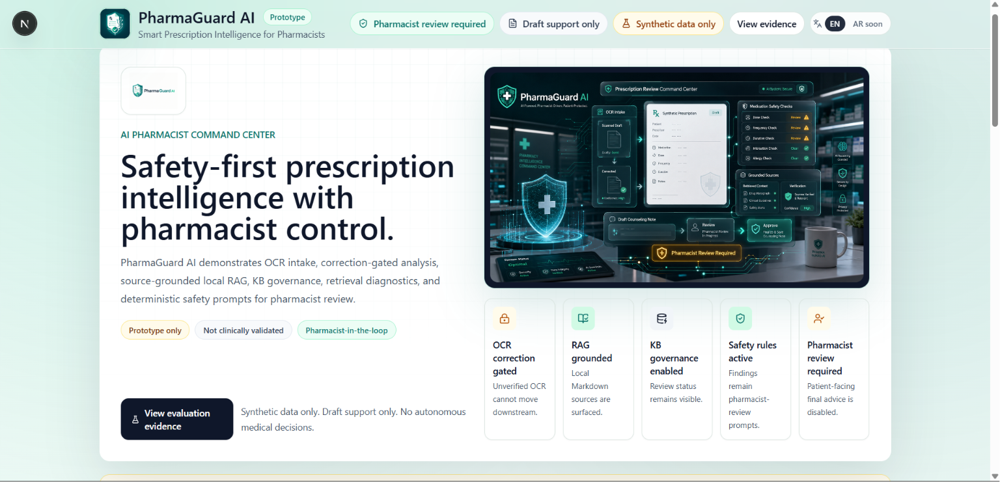

Correction before analysis
Unverified OCR cannot move into prescription analysis until a pharmacist confirms or corrects it.
Healthcare AI · Prototype
Safety-aware pharmacist-centered RAG copilot prototype.

AI output is draft support—not authority.
PharmaGuard AI is organized around control points that prevent raw OCR, unknown medications, missing context, or draft knowledge from silently becoming patient-facing advice. Safety state is represented in the workflow, not left to a disclaimer at the end.
Unverified OCR cannot move into prescription analysis until a pharmacist confirms or corrects it.
Local RAG shows retrieved context and returns insufficient context when support is missing.
Counseling language remains draft-only and patient-facing final advice stays disabled.
This project is a prototype using synthetic data and local placeholder knowledge. It is not a medical device, is not clinically validated, does not diagnose, and must never make final medical decisions.
Support, review, revise.
No real patient data belongs in the repository.
Uploaded images are read in memory and are not stored by default. No cloud OCR provider is active in the prototype.
A workflow gate, not a warning label.
Raw output cannot automatically trigger extraction, RAG retrieval, drug lookup, or counseling.
Only pharmacist-confirmed text can be manually passed into prescription analysis.
The confirmation endpoint returns correction-audit metadata such as changed status, character and word error rates, supported medication-term detection, privacy-warning categories, and a generated timestamp. That metadata is returned to the workflow and is not persisted to a database.
Source visibility and insufficient-context behavior.
Retrieved local context is displayed alongside draft pharmacist-support output.
Unknown medication names are not guessed and weak context should not produce unsupported content.
Draft placeholder educational content only.
The current local knowledge base combines Markdown drug profiles, a structured drug registry, and a source catalog. Governance reporting exposes profile counts, aliases, source and review status, missing sections, conflicts, disabled items, validation status, and patient-facing restrictions.
Generic names, conservative aliases, enabled state, and profile linkage.
Source categories and review state remain visible to evaluation tooling.
Draft content and unreviewed profiles carry explicit blockers and warnings.
The current profiles are local placeholder educational knowledge. They are not trusted clinical source ingestion and are not pharmacist-reviewed drug profiles.
Safety checks do not depend only on model wording.
Rules flag missing dose, frequency, duration, or route for review.
Unknown or unsupported medication terms produce an explicit workflow finding.
Potential identifier patterns are flagged without being asserted as confirmed PII.
Draft knowledge-base state remains visible as a governance warning.
Final patient advice remains unavailable in the prototype.
Findings support the pharmacist rather than replacing professional judgment.
Deterministic evidence for workflow behavior.
Trace records show unverified OCR status, blocked downstream use, pharmacist correction, corrected-text analysis, RAG source checks, draft counseling state, and the continuing pharmacist-review requirement. The generated traces are deterministic synthetic artifacts and do not contain real patient images.
Unverified OCR cannot enter prescription analysis.
The corrected text becomes the explicit downstream input.
Sources and draft output remain subject to pharmacist control.
Verified counts from the project documentation.
Top-k, source and section hits, insufficient-context behavior, required and forbidden terms, draft framing, and citation checks.
Character and word error rates, medication terms, privacy-warning matching, provider metadata, and quality gates.
Confirms blocked raw OCR, corrected-text analysis, RAG source checks, and review-required states.
These are engineering checks using synthetic data. They are not clinical validation, medical performance, or evidence for real patient use.
Select an image to enlarge it.
Not ready for real patient use.
This project is a prototype using synthetic data and local placeholder knowledge. It is not a medical device, is not clinically validated, does not diagnose, and must never make final medical decisions.
Primary project documentation.
FastAPI backend, Next.js pharmacist dashboard, local RAG, synthetic evaluation, OCR provider boundaries, governance reports, safety rules, and workflow traceability.